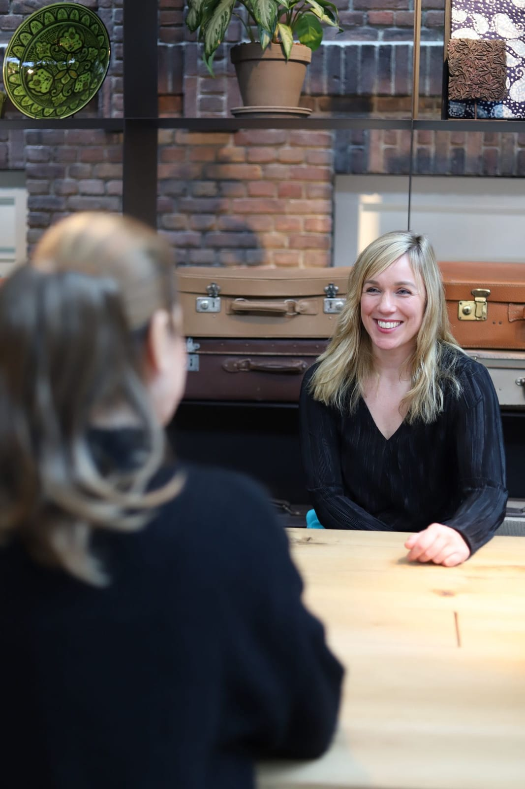
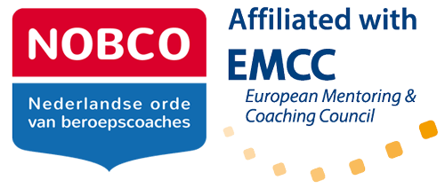
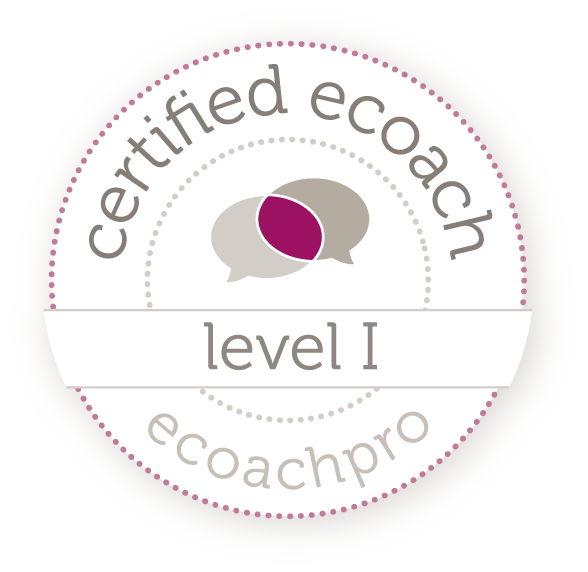

Voel je dat je vastzit, in je werk, je leven of allebei? Samen ontdekken we wat jij belangrijk vindt, waar je talent ligt en welke stappen je verder brengen.

Dan helpt het om eerst te ontdekken wat er werkelijk bij jou past, voordat je in actie komt.
Wat je vraag ook is, je begint met een gratis kennismaking. Daarna kijken we welk traject bij je past.
Je levensverhaal als kompas. We kijken naar de momenten, keuzes en ervaringen die jou hebben gebracht waar je nu bent, vinden je kwaliteiten en drijfveren en maken er een actieplan van.
Zo werkt het trajectVoor meer richting, balans en persoonlijke groei. Over stress, zelfvertrouwen, grenzen stellen, zingeving en gewoontes die je wilt veranderen. Praktisch, persoonlijk en direct toepasbaar.
Lees meerVanuit systeemdenken kijkt je team naar zichzelf. Samen ontdekken we de onbewuste patronen die de samenwerking beïnvloeden, zodat het team structureel anders leert samenwerken.
Lees meerVoor leiders en managers in de zorg die vastlopen in vergaderingen en brandjes blussen. Een programma van 6 maanden met 8 online of live sessies en support via WhatsApp.
Lees meerRust, ruimte en inzicht in je eigen tempo. Een sessie van 1,5 uur: 60 minuten yin yoga en 30 minuten verdieping, niet alleen vanuit praten maar juist ook vanuit voelen.
Lees meerZo ziet de route eruit. Je weet vooraf wat je kunt verwachten.
Je plant een klikgesprek of stuurt een bericht. Ik neem binnen 24 uur contact met je op en kijk ernaar uit je te ontmoeten.
We spreken elkaar eens in de twee tot drie weken, live op locatie Coachhuis nabij de stad van Amersfoort of online, wat jij prettig vindt.
Je krijgt opdrachten en reflecties die je helpen je verhaal verder te ontdekken en te vertalen naar je loopbaanwensen. Voor vragen ben ik bereikbaar via e-mail en WhatsApp.
Na afloop plannen we een gesprek om te kijken waar je staat en hoe je verder kunt.
Mijn loopbaan stond altijd in het teken van het ontwikkelen van anderen, als begeleider, procesbegeleider en coach in de gehandicaptenzorg. Ik zag hoe mensen ongelukkig in hun werk stonden en wat dat doet met de kwaliteit van het werk en het levensgeluk.
Mijn klanten beschrijven mij onder andere als luisterend, eerlijk, toegankelijk, diepgaand en gedreven.


“Als ik je coach sta jij achter het stuur en ik sta naast je en moedig je aan.”
Plan een gratis kennismaking of stel gewoon je vraag. Ik neem binnen 24 uur contact met je op.